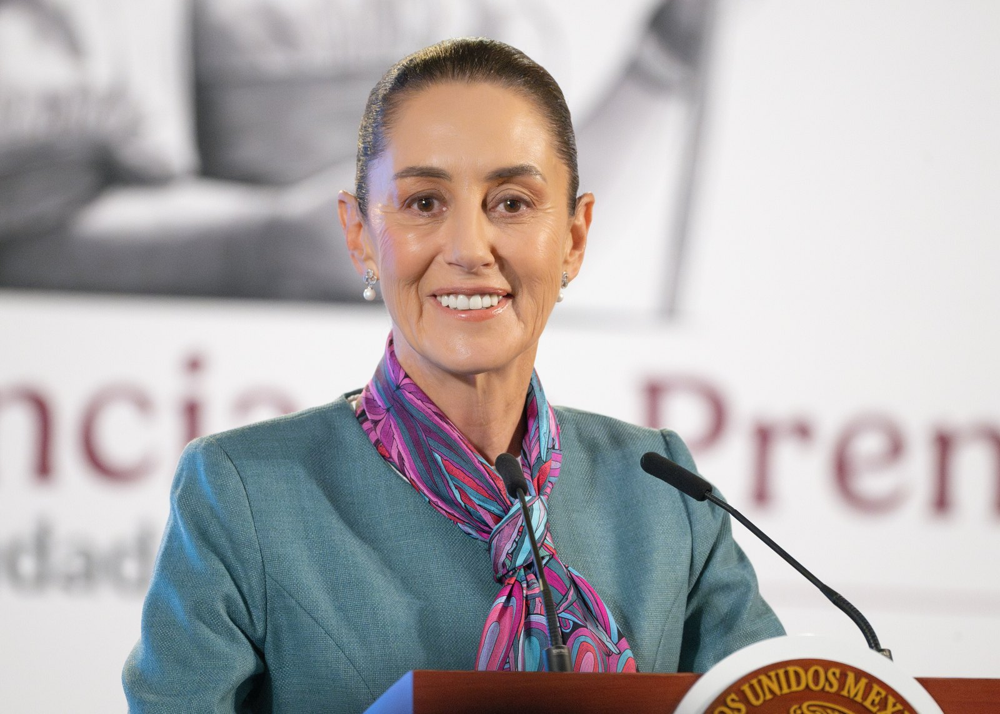
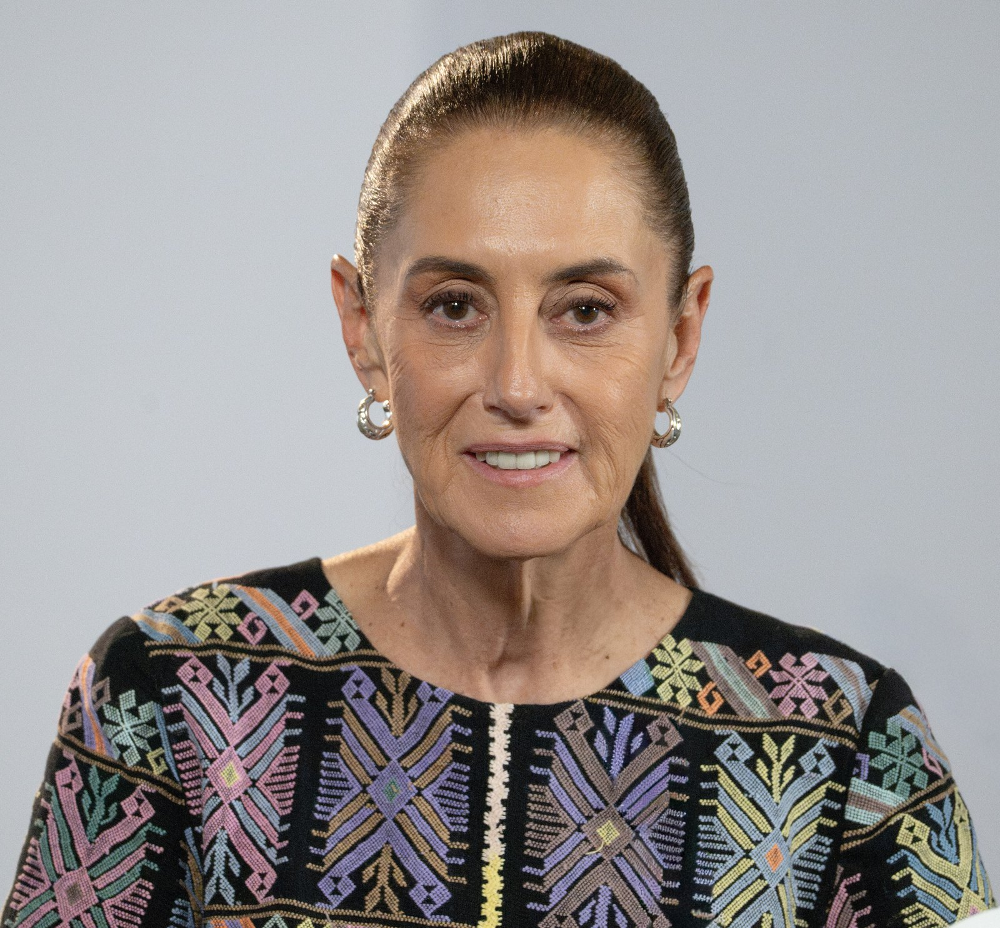
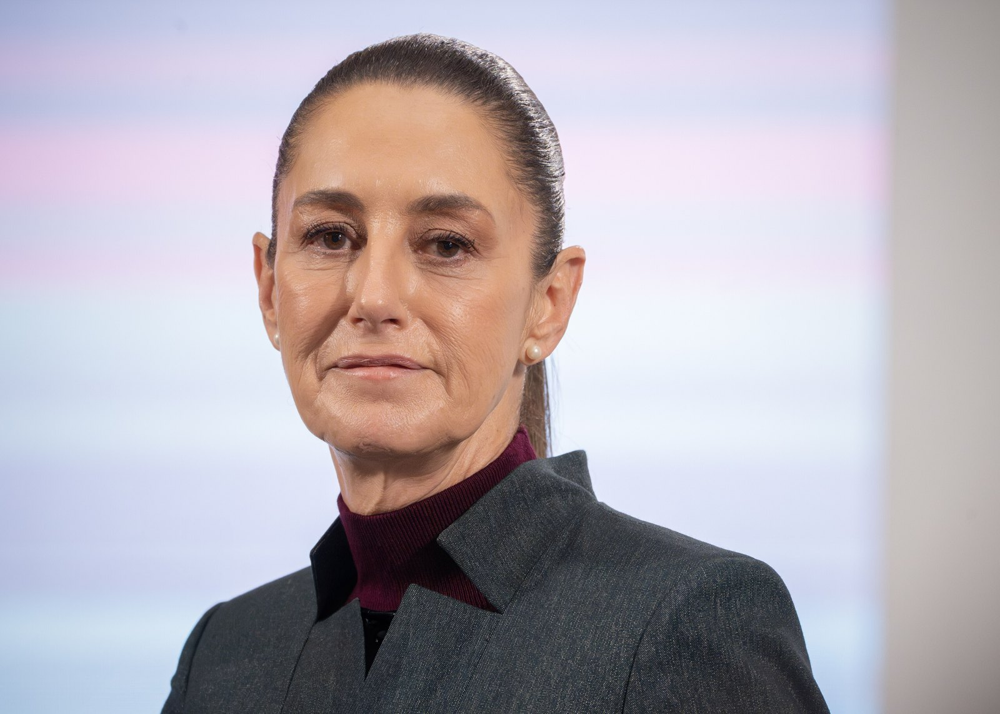
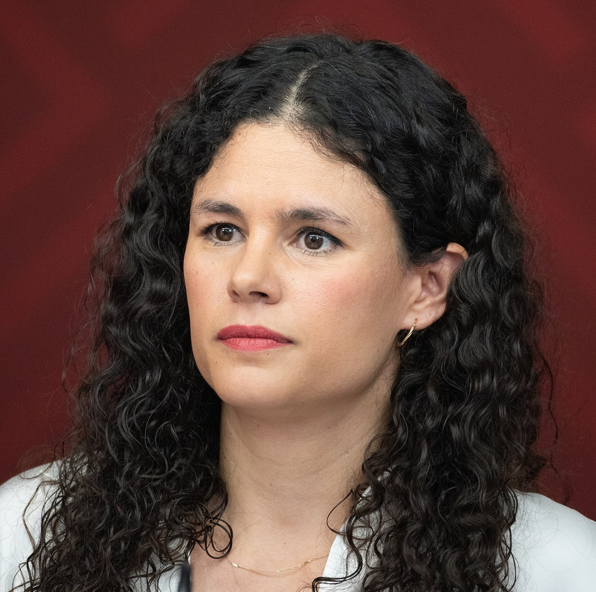

OKpolítico
OKpolíticoMañanera

5 cosas de la mañanera del viernes 30 de octubre
Resumen en cinco puntos de la conferencia matutina del viernes 30 de octubre de 2026. La presidenta Claudia Sheinbaum abordó las licitaciones de papelería en el INE, la situación d
31 de octubre de 2026
5 cosas de la mañanera del jueves 29 de octubre
Resumen de los temas clave de la conferencia matutina del jueves 29 de octubre de 2026. La presidenta Claudia Sheinbaum se pronunció sobre contrataciones en el INE, se rindió homen
30 de octubre de 20265 cosas de la mañanera del miércoles 28 de octubre
Resumen de la conferencia matutina del miércoles 28 de octubre de 2026. Se abordó el acuerdo de inversión para el agua en Guadalajara, la inauguración del puente Amado Nervo, las d
29 de octubre de 20265 cosas de la mañanera del martes 27 de octubre
Resumen de la conferencia matutina del martes 27 de octubre de 2026. El IMSS presenta un plan de 12 acciones que incluye aumento salarial, abasto de fármacos e intervenciones quirú
28 de octubre de 20265 cosas de la mañanera del lunes 26 de octubre
Resumen rápido de la conferencia matutina del lunes 26 de octubre de 2026.
27 de octubre de 2026
5 cosas de la mañanera del viernes 23 de octubre
Resumen rápido de la mañanera del 23 de octubre del 2026: compras de equipo médico de alta tecnología, aclaraciones sobre la Modalidad 40 de pensiones, el abasto de medicamentos fr
24 de octubre de 20265 cosas de la mañanera del jueves 22 de octubre
Resumen de la conferencia matutina del jueves 22 de octubre de 2026.
23 de octubre de 20265 cosas de la mañanera del miércoles 21 de octubre
Resumen de los principales anuncios de la conferencia matutina del miércoles 21 de octubre de 2026. El gabinete energético presentó el balance de evasión en combustibles de 2025 y
22 de octubre de 2026
5 cosas de la mañanera del martes 20 de octubre
Resumen de los temas clave de la conferencia matutina del 20 de octubre de 2026: compras consolidadas de salud, fallas en la logística de distribución, centros oncológicos, detenci
21 de octubre de 20265 cosas de la mañanera del lunes 19 de octubre
Resumen puntual de los temas abordados en la conferencia matutina del lunes 19 de octubre: proceso por traición a la patria contra exfiscal de Chihuahua, diálogos con EE. UU., beca
20 de octubre de 20265 cosas de la mañanera del viernes 16 de octubre
Resumen puntual de la conferencia matutina del 16 de octubre de 2026: alerta por el huracán Trudy, el destino de la Casa Tlalpan de Arturo Durazo y las cifras de reducción de homic
17 de octubre de 20265 cosas de la mañanera del jueves 15 de octubre
Resumen de los cinco puntos centrales de la conferencia mañanera del 15 de octubre de 2026: datos económicos de la OCDE, turismo récord, tarifa migratoria de no residentes, requeri
16 de octubre de 20265 cosas de la mañanera del miércoles 14 de octubre
Resumen de los temas principales abordados en la conferencia matutina del miércoles 14 de octubre de 2026 en Palacio Nacional, incluyendo la firma del decreto sobre entornos digita
15 de octubre de 20265 cosas de la mañanera del martes 13 de octubre
Resumen de la conferencia de prensa matutina de la presidenta Claudia Sheinbaum del 13 de octubre de 2026. Se abordaron cifras de seguridad, incidencia delictiva y la construcción
14 de octubre de 20265 cosas importantes de la mañanera del lunes 12 de octubre
Resumen rápido de la conferencia presidencial del 12 de octubre de 2026: trayectoria del huracán Simon, saldo de la tormenta Rachel en Baja California y la postura presidencial sob
13 de octubre de 2026
5 cosas de la mañanera del viernes 9 de octubre
Resumen puntual de los anuncios y temas de la mañanera del viernes 9 de octubre de 2026. El Gobierno de México presentó un decreto para regular contenidos en plataformas digitales,
10 de octubre de 20265 claves de la mañanera: 8 de octubre
Resumen verificado de la mañanera del 8 de octubre de 2026. Proyecciones de Mexicana, el AIFA y el estado de la seguridad nacional.
9 de octubre de 20265 cosas de la mañanera del miércoles 7 de octubre
Resumen rápido de la conferencia matutina del 7 de octubre de 2026. La presidenta Claudia Sheinbaum firmó el decreto de reforma sobre nacionalidad exclusiva para gobernar a partir
8 de octubre de 20265 cosas de la mañanera del martes 6 de octubre
Resumen neutral de la conferencia matutina de la presidenta Claudia Sheinbaum Pardo del 6 de octubre de 2026. Se detallan los avances de Salud Casa por Casa, el modelo de los consu
7 de octubre de 2026